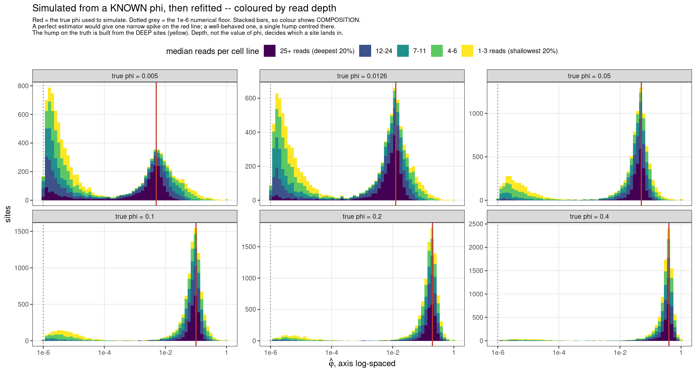
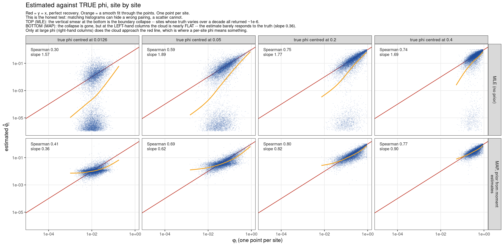

Last updated: 2026-09-16
Checks: 6 1
Knit directory: pumseq/
This reproducible R Markdown analysis was created with workflowr (version 1.7.0). The Checks tab describes the reproducibility checks that were applied when the results were created. The Past versions tab lists the development history.
The R Markdown is untracked by Git. To know which version of the R
Markdown file created these results, you’ll want to first commit it to
the Git repo. If you’re still working on the analysis, you can ignore
this warning. When you’re finished, you can run
wflow_publish to commit the R Markdown file and build the
HTML.
Great job! The global environment was empty. Objects defined in the global environment can affect the analysis in your R Markdown file in unknown ways. For reproduciblity it’s best to always run the code in an empty environment.
The command set.seed(20260202) was run prior to running
the code in the R Markdown file. Setting a seed ensures that any results
that rely on randomness, e.g. subsampling or permutations, are
reproducible.
Great job! Recording the operating system, R version, and package versions is critical for reproducibility.
Nice! There were no cached chunks for this analysis, so you can be confident that you successfully produced the results during this run.
Great job! Using relative paths to the files within your workflowr project makes it easier to run your code on other machines.
Great! You are using Git for version control. Tracking code development and connecting the code version to the results is critical for reproducibility.
The results in this page were generated with repository version a90f3cb. See the Past versions tab to see a history of the changes made to the R Markdown and HTML files.
Note that you need to be careful to ensure that all relevant files for
the analysis have been committed to Git prior to generating the results
(you can use wflow_publish or
wflow_git_commit). workflowr only checks the R Markdown
file, but you know if there are other scripts or data files that it
depends on. Below is the status of the Git repository when the results
were generated:
Ignored files:
Ignored: analysis/qtl_mapping_summary_cache/
Untracked files:
Untracked: analysis/qtl_mapping_betabinomial_phi_estimation.Rmd
Unstaged changes:
Modified: analysis/index.Rmd
Modified: analysis/qtl_mapping_betabinomial_lowphi.Rmd
Note that any generated files, e.g. HTML, png, CSS, etc., are not included in this status report because it is ok for generated content to have uncommitted changes.
There are no past versions. Publish this analysis with
wflow_publish() to start tracking its development.
suppressMessages({ library(data.table); library(ggplot2) })
knitr::opts_chunk$set(echo = TRUE, warning = FALSE, message = FALSE,
fig.align = "center", fig.width = 10)
PSI <- "/project/xinhe/xsun/pumseq/pumseq_processed/psi_qtl"
RC <- file.path(PSI, "qtl_betabinomial/phi_recovery")
LP <- file.path(PSI, "qtl_betabinomial/low_phi_validation")This page records a problem with our per-site estimates of the overdispersion φ, and the six things we have tried against it.
The test is simple: simulate data where we know φ, then refit with our usual estimator and see what comes back.
How the data were simulated. We reuse the real design rather than an idealised one. Fitting the null model to the real counts at every site gives, per site, a fitted mean μ̂ᵢ for each cell line (which varies across lines through the 3 phenotype PCs). Those means and the real read depths nᵢ are held fixed as templates; only φ is imposed. Then for a chosen true φ, at every site and every cell line:
\[p_i \;\sim\; \mathrm{Beta}\!\left(\hat\mu_i\tfrac{1-\varphi}{\varphi},\; (1-\hat\mu_i)\tfrac{1-\varphi}{\varphi}\right), \qquad y_i \;\sim\; \mathrm{Binomial}(n_i,\, p_i)\]
The simulated counts therefore have our actual depth distribution, our actual mean structure and our actual number of cell lines — so the estimation problem is the one we really face, with the single difference that we know the answer.
Scale of the simulation.
RBx <- fread(file.path(RC, "recovery_by_site.txt.gz"), sep = "\t")
knitr::kable(data.table(
quantity = c("true phi values imposed",
"sites simulated per true phi",
"cell lines per simulated site",
"site-level datasets in total",
"simulated count observations (y, n) in total",
"random seed"),
value = c(paste(sort(unique(RBx$phi_true)), collapse = ", "),
format(uniqueN(RBx$sid), big.mark = ","),
"median 49 (range 10-50)",
format(nrow(RBx), big.mark = ","),
"~3.08 million",
"2026")),
caption = "One dataset per site per true phi. Each 'site-level dataset' is ~49 paired counts (y_i, n_i), one per cell line, which is exactly what a real site provides. The histograms below pool the ~10,000 sites within each true-phi panel.")| quantity | value |
|---|---|
| true phi values imposed | 0.005, 0.0126, 0.05, 0.1, 0.2, 0.4 |
| sites simulated per true phi | 10,467 |
| cell lines per simulated site | median 49 (range 10-50) |
| site-level datasets in total | 62,802 |
| simulated count observations (y, n) in total | ~3.08 million |
| random seed | 2026 |
The design of one panel, step by step. Take a single true φ, say 0.0126. Give every one of the 10,467 sites that same φ — so within a panel there is exactly one true value, and it is the red line. Simulate that site’s ~49 paired counts. Estimate φ̂ at that site, using only that site’s own data, exactly as the production pipeline does. Repeat independently for all 10,467 sites, and plot the histogram of the resulting 10,467 estimates. Then repeat the whole procedure at each of the six true φ values to get the six panels.
What success would look like. If the estimator were perfect, all 10,467 estimates would equal 0.0126 and the histogram would be a single narrow spike on the red line. It cannot be that sharp in practice — each site has only ~49 cell lines at ~8 reads, so some scatter is unavoidable and expected. A well-behaved estimator would therefore give one hump centred on the red line, with its width reflecting nothing but sampling noise.
What the figure actually shows at small φ is a hump on the red line plus a second spike jammed against the boundary. The hump is fine and expected. The second spike is the failure: those sites did not return a noisy version of 0.0126, they returned essentially zero.
A handful of fits fail outright at each value (9,491 to 10,076 succeed of 10,467) and are excluded from the panel. Note the failure rate itself rises with φ, so those exclusions are not random.
If the estimates are wrong at a large minority of sites, the natural question is whether those sites share anything. They do, and it is overwhelmingly read depth.
knitr::kable(fread(file.path(RC, "accuracy_by_property.tsv"), sep = "\t"),
caption = "Sites at true phi = 0.0126, grouped by how accurate their estimate turned out. The accurate group has 9x more information (sum n(n-1)) and 3.7x lower predicted SE than the sites that collapsed to the floor. Cell-line count and pooled %pU barely differ between groups.")| grp | sites | % of sites | median reads per line | median total reads | median cell lines | median pooled %pU | median sum n(n-1) | predicted SE(phi) |
|---|---|---|---|---|---|---|---|---|
| collapsed to the 1e-6 floor | 1460 | 14.5% | 8 | 490 | 49 | 4.0% | 7,544 | 0.0217 |
| >10x too low (not at floor) | 3380 | 33.6% | 5 | 268 | 47 | 4.6% | 2,130 | 0.0434 |
| wrong but not extreme | 2288 | 22.8% | 10 | 630 | 49 | 4.8% | 11,235 | 0.0167 |
| accurate (within 2x) | 2918 | 29.0% | 24 | 1547 | 50 | 5.4% | 69,750 | 0.0058 |
knitr::kable(fread(file.path(RC, "accuracy_by_depth.tsv"), sep = "\t"),
caption = "Accuracy by read-depth quintile. This is the actionable result: at ~51 reads per cell line, only 3% of sites collapse and 68% land within 2x, whereas at ~3 reads only 7% are within 2x.")| depth quintile | sites | median reads per line | % collapsed to floor | % more than 10x too low | % within 2x of truth |
|---|---|---|---|---|---|
| [1,4] | 2627 | 3 | 12.8% | 73.2% | 7.1% |
| (4,7] | 1762 | 6 | 20.6% | 65.3% | 13.7% |
| (7,12] | 1693 | 10 | 24.0% | 52.6% | 22.7% |
| (12,26] | 1988 | 17 | 14.8% | 34.9% | 38.3% |
| (26,1.467e+04] | 1976 | 51 | 3.0% | 9.3% | 68.0% |
Three things follow.
Depth is the whole story, and it is actionable. Sites in the top depth quintile (~51 reads per cell line) collapse only 3% of the time and are within 2x of the truth 68% of the time. Sites in the bottom quintile (~3 reads) are within 2x only 7% of the time. So a per-site φ is recoverable — for the deep sites. The obvious consequence is that φ should be reported only above a depth threshold, not genome-wide.
Cell-line count and %pU are not the problem. The four accuracy groups have essentially the same number of covered cell lines (47-50) and similar modification rates (4.0-5.4%). Only depth and the information summary sum n(n-1) separate them.
The boundary rate is not monotone in depth — it peaks at ~10 reads (24%) rather than at the lowest depth (12.8%). At very low depth the Pearson statistic is so noisy that estimates scatter in both directions rather than settling on the boundary, so the shallowest sites are wrong in both directions rather than specifically collapsed.
RB <- fread(file.path(RC, "recovery_by_site.txt.gz"), sep = "\t")[is.finite(phi_hat)]
RS <- fread(file.path(RC, "recovery_summary.tsv"), sep = "\t")
SP <- fread(file.path(RC, "site_properties.txt.gz"), sep = "\t")
RB <- merge(RB, SP[, .(sid, med_depth)], by = "sid")
PT <- sort(unique(RB$phi_true))
RB[, panel := factor(sprintf("true phi = %g", phi_true),
levels = sprintf("true phi = %g", PT))]
# colour by READ DEPTH quintile -- the point is that the boundary spike and the
# hump on the truth are made of different sites
qb <- quantile(SP$med_depth, 0:5/5)
RB[, dq := cut(med_depth, qb, include.lowest = TRUE,
labels = c("1-3 reads (shallowest 20%)", "4-6", "7-11", "12-24",
"25+ reads (deepest 20%)"))]
vl <- merge(unique(RB[, .(panel, phi_true)]), RS[, .(phi_true, mode = `mode phi_hat`)], by = "phi_true")
ggplot(RB, aes(phi_hat, fill = dq)) +
geom_histogram(bins = 60, colour = NA) +
geom_vline(xintercept = 1e-6, colour = "grey35", linetype = "dotted") +
geom_vline(data = vl, aes(xintercept = phi_true), colour = "#c0392b", linewidth = 0.7) +
facet_wrap(~ panel, nrow = 2, scales = "free_y") +
scale_x_log10(breaks = 10^seq(-6, 0, 2), labels = c("1e-6", "1e-4", "1e-2", "1")) +
scale_fill_viridis_d(option = "viridis", direction = -1,
name = "median reads per cell line") +
guides(fill = guide_legend(nrow = 1, reverse = TRUE)) +
labs(x = expression(hat(varphi)*", axis log-spaced"), y = "sites",
title = "Simulated from a KNOWN phi, then refitted -- coloured by read depth",
subtitle = paste(
"Red = the true phi used to simulate. Dotted grey = the 1e-6 numerical floor. Stacked bars, so colour shows COMPOSITION.",
"A perfect estimator would give one narrow spike on the red line; a well-behaved one, a single hump centred there.",
"The hump on the truth is built from the DEEP sites (yellow). Depth, not the value of phi, decides which a site lands in.",
sep = "\n")) +
theme_bw(base_size = 11) +
theme(legend.position = "top", panel.grid.minor = element_blank(),
plot.subtitle = element_text(size = 8))
At a true φ of 0.0126 — the value our real data suggest — 14% of sites return essentially zero and about half are more than tenfold too low, even though the mode of the distribution sits correctly on the truth:
knitr::kable(RB[, { r <- phi_hat/phi_true[1]
.(`within 2x of truth` = sprintf("%.1f%%", 100*mean(r > 0.5 & r < 2)),
`>10x too low` = sprintf("%.1f%%", 100*mean(r < 0.1)),
`at the 1e-6 floor` = sprintf("%.1f%%", 100*mean(phi_hat < 2e-6)),
`median fold error` = round(median(pmax(r, 1/r)), 1)) },
by = .(`true phi` = phi_true)][order(`true phi`)],
caption = "Per-site accuracy against known truth. The mode is nearly unbiased at every true phi >= 0.0126, but individual sites are frequently wrong by orders of magnitude, and worst where phi is smallest.")| true phi | within 2x of truth | >10x too low | at the 1e-6 floor | median fold error |
|---|---|---|---|---|
| 0.0050 | 18.2% | 59.8% | 20.0% | 461.4 |
| 0.0126 | 29.0% | 48.2% | 14.5% | 9.0 |
| 0.0500 | 51.8% | 26.9% | 5.3% | 1.9 |
| 0.1000 | 62.0% | 18.1% | 2.7% | 1.6 |
| 0.2000 | 70.8% | 11.4% | 1.2% | 1.4 |
| 0.4000 | 79.3% | 7.0% | 0.5% | 1.3 |
knitr::kable(data.table(
approach = c("multi-start optimiser",
"peak-proximity rule",
"trend-based prior centre (DESeq2/edgeR style)",
"Gaussian prior on log phi",
"Student-t prior on log phi",
"two-component mixture prior",
"prior derived from the MOMENT estimator"),
idea = c("start the optimiser from 3 values of phi, keep the best fit",
"of the optima found, take the one nearest the population mode",
"predict each site's phi from its mean and depth, shrink toward that",
"penalise phi values far from 0.0126",
"same, but with a heavy tail so distant sites escape",
"two plausible centres (0.019 and 0.46) instead of one",
"estimate the prior from an optimiser-free estimator, then MAP"),
outcome = c("FIXED A DIFFERENT BUG: 13 sites where the likelihood is bimodal and one fixed start found the worse optimum. Did NOT touch the boundary spike.",
"NO. Per-site tracking unchanged; it only moves the pile off the boundary to ~1e-4. A relocation, not a repair.",
"RULED OUT before building: phi is not predictable from site features (R-squared = 0.058), so there is no trend to shrink toward.",
"NO. Loses to a CONSTANT GUESS at 3 of 4 true phi, and tracks WORSE than the MLE at large phi (Spearman 0.68 vs 0.74).",
"NO. Same failure -- at 2 log-units out the tail has not saturated enough to help.",
"MARGINAL. Roughly ties the MLE on tracking at large phi; and its second component is not supported by an optimiser-free estimator (see 3.2).",
"BEST OF THE SIX, but not a solution: it is the only approach that beats a constant guess at all four true phi, yet per-site tracking at the modal phi is still only Spearman 0.41.")),
caption = "Six attempts. Verdicts are by per-site tracking (see 3.1), not by the 'within 2x' rate, which is misleading -- see below.")| approach | idea | outcome |
|---|---|---|
| multi-start optimiser | start the optimiser from 3 values of phi, keep the best fit | FIXED A DIFFERENT BUG: 13 sites where the likelihood is bimodal and one fixed start found the worse optimum. Did NOT touch the boundary spike. |
| peak-proximity rule | of the optima found, take the one nearest the population mode | NO. Per-site tracking unchanged; it only moves the pile off the boundary to ~1e-4. A relocation, not a repair. |
| trend-based prior centre (DESeq2/edgeR style) | predict each site’s phi from its mean and depth, shrink toward that | RULED OUT before building: phi is not predictable from site features (R-squared = 0.058), so there is no trend to shrink toward. |
| Gaussian prior on log phi | penalise phi values far from 0.0126 | NO. Loses to a CONSTANT GUESS at 3 of 4 true phi, and tracks WORSE than the MLE at large phi (Spearman 0.68 vs 0.74). |
| Student-t prior on log phi | same, but with a heavy tail so distant sites escape | NO. Same failure – at 2 log-units out the tail has not saturated enough to help. |
| two-component mixture prior | two plausible centres (0.019 and 0.46) instead of one | MARGINAL. Roughly ties the MLE on tracking at large phi; and its second component is not supported by an optimiser-free estimator (see 3.2). |
| prior derived from the MOMENT estimator | estimate the prior from an optimiser-free estimator, then MAP | BEST OF THE SIX, but not a solution: it is the only approach that beats a constant guess at all four true phi, yet per-site tracking at the modal phi is still only Spearman 0.41. |
We first scored these by the fraction of sites within 2x of the truth. That metric is misleading, and it flattered every method. If the true phi values are tightly clustered, then simply returning a constant near the middle scores well without using the data at all. So the table below adds two honest criteria:
TR <- fread(file.path(RC, "approach_tracking.tsv"), sep = "\t")
LV <- c("(constant guess)", "MLE", "gauss sd=0.83", "t df=2 sd=0.83",
"t df=1 sd=0.4", "MIXTURE", "MAP: mom-median")
TR <- TR[est %chin% LV][, est := factor(est, levels = LV)]
knitr::kable(dcast(TR, est ~ truth_centre, value.var = "spearman")[order(est)],
caption = "SPEARMAN correlation between true and estimated phi, per site, by the centre of the true phi distribution. Higher is better; the constant guess is 0 by construction.")| est | 0.0126 | 0.05 | 0.2 | 0.4 |
|---|---|---|---|---|
| (constant guess) | 0.000 | 0.000 | 0.000 | 0.000 |
| MLE | 0.294 | 0.578 | 0.754 | 0.737 |
| gauss sd=0.83 | 0.392 | 0.614 | 0.713 | 0.682 |
| t df=2 sd=0.83 | 0.397 | 0.611 | 0.713 | 0.695 |
| t df=1 sd=0.4 | 0.408 | 0.583 | 0.675 | 0.668 |
| MIXTURE | 0.391 | 0.629 | 0.735 | 0.742 |
| MAP: mom-median | 0.406 | 0.694 | 0.805 | 0.772 |
knitr::kable(dcast(TR, est ~ truth_centre, value.var = "slope")[order(est)],
caption = "SLOPE of log(estimate) on log(truth). 1 = tracks each site; 0 = returns a constant; above 1 = spreads estimates more widely than the truth.")| est | 0.0126 | 0.05 | 0.2 | 0.4 |
|---|---|---|---|---|
| (constant guess) | 0.00 | 0.00 | 0.00 | 0.00 |
| MLE | 1.55 | 1.85 | 1.85 | 1.72 |
| gauss sd=0.83 | 0.46 | 0.81 | 1.10 | 1.27 |
| t df=2 sd=0.83 | 0.43 | 0.80 | 1.11 | 1.30 |
| t df=1 sd=0.4 | 0.28 | 0.68 | 1.12 | 1.37 |
| MIXTURE | 0.42 | 0.79 | 1.10 | 1.19 |
| MAP: mom-median | 0.36 | 0.62 | 0.82 | 0.90 |
knitr::kable(dcast(TR, est ~ truth_centre, value.var = "within2x")[order(est)],
caption = "The 'within 2x' rate, shown for comparison. Note the constant guess scores 68.7% at the smallest true phi -- which is why this metric cannot be used on its own.")| est | 0.0126 | 0.05 | 0.2 | 0.4 |
|---|---|---|---|---|
| (constant guess) | 68.7% | 54.2% | 54.4% | 77.0% |
| MLE | 30.0% | 50.4% | 69.9% | 79.6% |
| gauss sd=0.83 | 61.6% | 53.7% | 62.9% | 70.8% |
| t df=2 sd=0.83 | 64.7% | 53.3% | 62.9% | 72.4% |
| t df=1 sd=0.4 | 74.3% | 50.1% | 57.1% | 69.6% |
| MIXTURE | 66.1% | 57.1% | 65.1% | 78.0% |
| MAP: mom-median | 71.2% | 73.1% | 80.8% | 89.0% |
Three things follow, and they change the verdicts.
The MLE spreads estimates too widely, not too narrowly. Its slope is 1.55-1.85 everywhere, well above 1. The boundary collapse is the cause: sites pushed to 1e-6 create extreme low values that stretch the range.
The fixed-centre priors do not work. The Gaussian scores 61.6% within 2x at the smallest true phi, which looked like a large gain over the MLE’s 30.0% – but a constant guess scores 68.7%, so it is worse than not using the data. It loses to the constant at three of the four true phi values, and at large phi it tracks worse than the plain MLE (Spearman 0.682 against 0.737). The Student-t behaves the same way. The mixture is better but only ties the MLE on tracking at large phi.
The moment-derived prior is the best of the six, but it does not solve the problem. It has the best Spearman at every true phi (0.41 / 0.69 / 0.81 / 0.77), it is the only approach that beats the constant guess at all four, and its slope rises toward 1 as information increases (0.36 -> 0.62 -> 0.82 -> 0.90), which is the behaviour a shrinkage estimator should have. But 0.41 at the phi our data actually suggest is weak per-site agreement, and no approach we tried does better there. Where information is plentiful (phi ~ 0.2-0.4) the tracking is respectable; at the modal phi it is not.
Three passes, and the key point is that nothing is assumed about where φ sits:
How this simulation differs from the one in §1. In §1 a single true φ was imposed on every site, which is the right way to ask “does the estimator recover a known value”. It cannot be used to test a prior, because with one true value the best possible prior is a spike on that value — it would score perfectly while learning nothing. A prior describes how φ varies between sites, so the truth has to vary. So here:
log10(φᵢ) ~ Normal(log10(centre), sd), clipped to [1e-5,
0.9]. Four centres are used — 0.0126, 0.05, 0.2, 0.4 — so the method is
tested where our data suggest φ sits and well away from
it.The prior is rebuilt from scratch inside every truth setting, so what is being tested is the whole procedure rather than a prior that happened to suit one answer. That is what makes the comparison fair: the derived centre had to find the truth at four different values, and it did (truth 0.0126 → derived 0.0124; 0.05 → 0.0433; 0.2 → 0.140; 0.4 → 0.281). A fixed-centre prior would have been right in one column and wrong in three.
sc <- fread(file.path(RC, "moment_prior_by_site.txt.gz"), sep = "\t")
sc <- sc[is.finite(phi_hat) & phi_hat > 0 & is.finite(phi_true) &
est %chin% c("MLE", "MAP: mom-median")]
# defined here rather than in an earlier chunk so this figure stands alone
EL <- c("MLE" = "MLE (no prior)", "MAP: mom-median" = "MAP, prior from moment estimates")
CT <- c(0.0126, 0.05, 0.2, 0.4)
sc[, rl := factor(EL[est], levels = EL)]
sc[, cl := factor(sprintf("true phi centred at %g", truth_centre),
levels = sprintf("true phi centred at %g", CT))]
sann <- sc[, .(sp = cor(log10(phi_true), log10(phi_hat), method = "spearman"),
sl = coef(lm(log10(phi_hat) ~ log10(phi_true)))[2]), by = .(rl, cl)]
sann[, lab := sprintf("Spearman %.2f\nslope %.2f", sp, sl)]
ggplot(sc, aes(phi_true, phi_hat)) +
geom_abline(slope = 1, intercept = 0, colour = "#c0392b", linewidth = 0.5) +
geom_point(size = 0.25, alpha = 0.15, shape = 16, colour = "#1f4e9c") +
geom_smooth(method = "gam", formula = y ~ s(x, bs = "cs"), se = FALSE,
colour = "#f5a623", linewidth = 0.7) +
geom_text(data = sann, aes(x = 1.5e-5, y = 1.3, label = lab), hjust = 0, vjust = 1,
size = 2.7, colour = "grey15", lineheight = 0.95) +
facet_grid(rl ~ cl, labeller = label_wrap_gen(width = 28)) +
scale_x_log10() + scale_y_log10() +
labs(x = expression(TRUE~varphi[i]~"(one point per site)"),
y = expression(estimated~hat(varphi)[i]),
title = "Estimated against TRUE phi, site by site",
subtitle = paste(
"Red = y = x, perfect recovery. Orange = a smooth fit through the points. One point per site.",
"This is the honest test: matching histograms can hide a wrong pairing, a scatter cannot.",
"TOP (MLE): the vertical smear at the bottom is the boundary collapse -- sites whose truth varies over a decade all returned ~1e-6.",
"BOTTOM (MAP): the collapse is gone, but at the LEFT-hand columns the cloud is nearly FLAT -- the estimate barely responds to the truth (slope 0.36).",
"Only at large phi (right-hand columns) does the cloud approach the red line, which is where a per-site phi means something.",
sep = "\n")) +
theme_bw(base_size = 10) +
theme(panel.grid.minor = element_blank(), strip.text = element_text(size = 8),
plot.subtitle = element_text(size = 7.5))
The scatter is a stricter test than the histogram above it, and it shows two things the histogram could not.
The MLE’s surviving estimates are unbiased. In the top row the main cloud sits squarely on the red line at every truth centre. The MLE’s problem is not that it estimates φ badly — it is that a detached blob of sites falls off the bottom entirely, spanning the whole range of truth and all returning ~10⁻⁶. So the MLE is really two estimators: an unbiased one, and a failure mode. That is a more favourable reading of the MLE than the pooled accuracy figures give it.
The MAP trades collapse for inflation, and the scatter makes
the direction visible. In the bottom row the blob is gone, but
at the low end the cloud sits above the red line — roughly
tenfold above it at the left edge of the 0.0126 panel —
before crossing it further right. That is shrinkage toward the prior
centre seen from the side: sites whose true φ lies below the centre are
pushed up, and sites above it are pulled
down. Near-horizontal at small φ (slope 0.36),
approaching the line by φ = 0.4 (slope 0.90).
sessionInfo()R version 4.2.0 (2022-04-22)
Platform: x86_64-pc-linux-gnu (64-bit)
Running under: CentOS Linux 7 (Core)
Matrix products: default
BLAS/LAPACK: /software/openblas-0.3.13-el7-x86_64/lib/libopenblas_haswellp-r0.3.13.so
locale:
[1] C
attached base packages:
[1] stats graphics grDevices utils datasets methods base
other attached packages:
[1] ggplot2_4.0.3 data.table_1.14.2
loaded via a namespace (and not attached):
[1] tidyselect_1.2.0 xfun_0.41 bslib_0.3.1 lattice_0.20-45
[5] splines_4.2.0 vctrs_0.6.5 generics_0.1.4 htmltools_0.5.2
[9] viridisLite_0.4.0 yaml_2.3.5 mgcv_1.8-40 utf8_1.2.2
[13] rlang_1.1.2 R.oo_1.24.0 jquerylib_0.1.4 later_1.3.0
[17] pillar_1.9.0 glue_1.6.2 withr_2.5.0 R.utils_2.11.0
[21] bit64_4.0.5 RColorBrewer_1.1-3 S7_0.2.0 lifecycle_1.0.4
[25] stringr_1.5.1 gtable_0.3.6 workflowr_1.7.0 R.methodsS3_1.8.1
[29] evaluate_0.15 labeling_0.4.2 knitr_1.39 fastmap_1.1.0
[33] httpuv_1.6.5 fansi_1.0.3 highr_0.9 Rcpp_1.0.12
[37] promises_1.2.0.1 scales_1.4.0 jsonlite_1.8.0 farver_2.1.0
[41] fs_1.5.2 bit_4.0.4 digest_0.6.29 stringi_1.7.6
[45] dplyr_1.1.4 grid_4.2.0 rprojroot_2.0.3 cli_3.6.1
[49] tools_4.2.0 magrittr_2.0.3 sass_0.4.1 tibble_3.2.1
[53] dichromat_2.0-0.1 pkgconfig_2.0.3 Matrix_1.5-3 rmarkdown_2.25
[57] rstudioapi_0.13 R6_2.5.1 nlme_3.1-157 git2r_0.30.1
[61] compiler_4.2.0